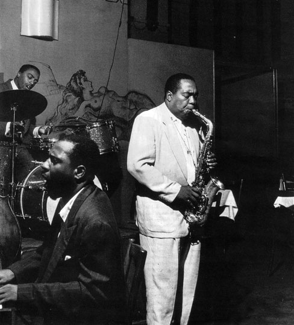
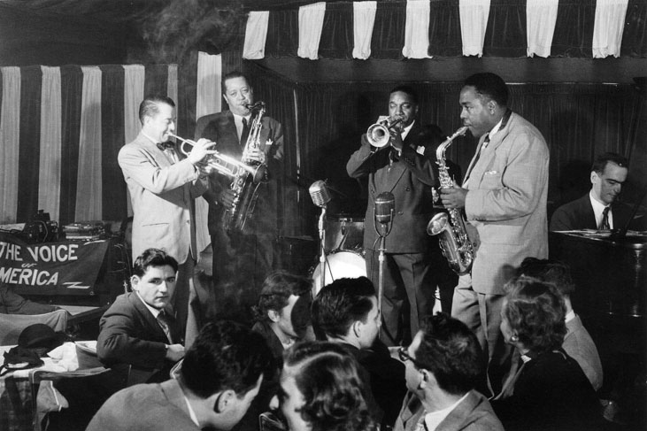
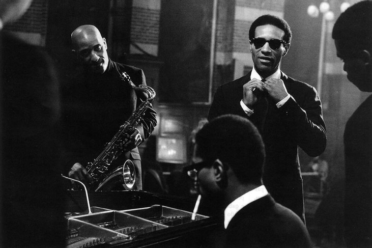
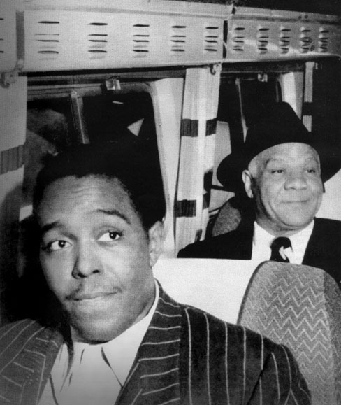
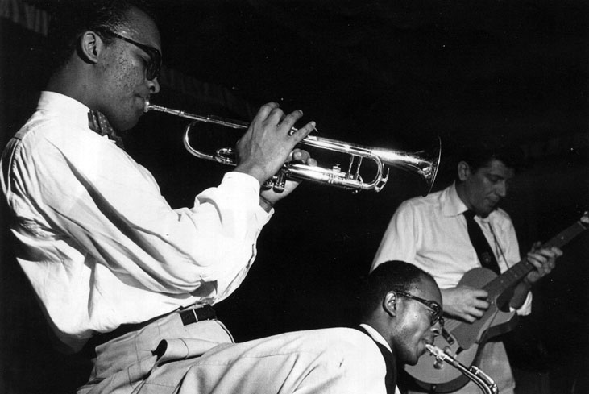
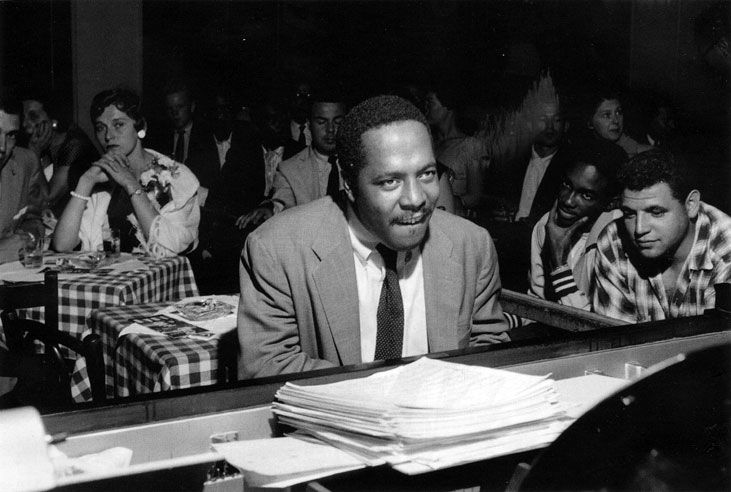
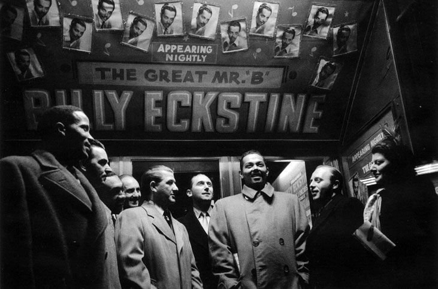
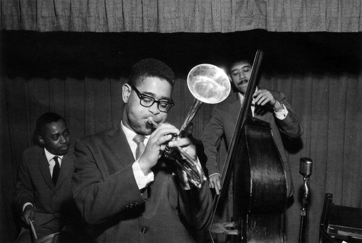
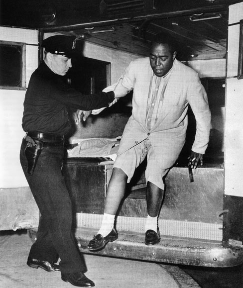

Чарли Паркър
Чарли Паркър
Една нощ двама улични бандити се нахвърлят върху Теди Блум, мениджър на саксофониста Чарли Паркьр. Вадят нож, заплашват го, искат пари, а той казва, че в портфейла си има само ноти. „Да не би да си мениджърът на Чарли - питат крадците. - Тогава ни дай автограф.” Чарли Паркьр е историята на съвременния джаз. На 15 години напуска училището си в канзас Сити и започва да се занимава с музика. Скита из гетото с различни състави. „Свирехме без прекъсване от 9 вечерта до 5 сутринта. За нощ получавахме по долар и двайсет и пет цента” - спомня си Чарли. Година по-късно се жени за първи път. Тя е на 19, с три години по-голяма - Ребека Рафинг. Бракът им продължава кратко, защото според Чарли тя го третира като син, а не като съпруг. Всъщност Чарли започва да пребива Ребека. И това не е единственият епизод на насилие около него. Баща му е наръган до смърт от пияна жена по време на караница. Канзас Сити е метрополия на наркоманите. Наркотиците създават общност. През 1943 Чарли се жени за Жералдин. Една вечер обаче загася цигарата си върху пода, докато Жералдин спи, и къщата е обхваната от пламъци. Това е вторият му семеен провал. След смъртта му, когато всичко от Паркьр се превръща в ценност, Жералдин ще заяви: „Единственото, което получих от Чарли, когато се омъжих, бяха саксофонът и зависимостта му от наркотиците. Зависимостта той ми я предаде, така че мога да претендирам и за саксофона.” След още 5 години Чарли се жени за третата си жена Дорис и отново бързо се разделя с нея. Всъщност Чарли има общо четири съпруги. Последната е Чан. Паркър казва, че едва ли има на света други жени, които могат да изтърпят това, което той им е причинил. Музикантът устройва на съпругите си всевъзможни неприятности. При обиколките в различни градове лъже разни жени, че ще се ожени за тях, подарява им пръстени, а после ги зарязва завинаги. Чарли е самоук, не обича музикантските теории. Няма и понятие от елементарните правила на музиката. „Музиката е твоята мъдрост. Твоите мисли. Ако не я живееш, нищо няма да излезе от инструмента ти. Учат ни, че музиката има определени граници, но

Контрабасистът Чарлз Мингас, пианистът Телониъс Монк и саксофонистът Чарли Паркър. Ню Йорк, 13 септември 1953
изкуството няма граници” - казва Чарли. Талантът му е истински скандал в джаза. Това е музика за музиканти, да я продадеш е невъзможно. Паркър щедро раздава своите композиции наляво и надясно, а после чува по радиото крадените от него мелодии. Звукозаписните компании знаят, че той е златна жила. Записват го на концерти, партита, навсякъде, кьдето могат. Наричат Чарли с прозвището Yardbird или просто Bird (Птицата) заради това, че обича да яде пилета. Пилешко. Всъщност историята е следната: Паркър пътува с кола, по пътя шофьорът смачква едно пиле, Паркьр моли шофьора да спре и прибира пилето за вечеря. Ха-ха.

Тромпетистът Макс Камински, саксофонистът Лестър Йънг, алтсаксофонистът Чарли Паркър и пианистът Лени Тристано свирят в новия клуб Birdland. Ню Йорк, 16 декември 1949
Чарли пристига в Ню Йорк на 17. Отначало мие чинии. Бастър Смит разказва: „Чарли свиреше в моя оркестър в Канзас Сити. Беше най-младият. През 1938 отидох в Ню Йорк, за да търся работа за момчетата. Седем месеца по-късно все още не бях намерил нищо. Тогаба Чарли се качва на товарния влак и като бродяга се добира до НюЙорк. Когато се появи пред вратата ми, видът му беше ужасен, от обувките му не беше останало нищо. Докато жена ми и аз бяхме навън през деня, Чарли спеше в леглото ни. Нощите прекарваше някьде, а на сутринта се появяваше и отново търсеше легло. Следобед го изгонвах, преди да се прибере жена ми, тя не го понасяше, защото спеше с дрехите. Няколко месеца живя така, после срещна Джей Макшан, който го взе в оркестъра си.” На 21 години Чарли е един от най-добрите алтсаксофонисти. Постепенно се превръща във водеща фигура на джазовия авангард. Чарли Паркър е екстремист. Отива до край и ако може - още по-на-татък. Яде, пие и прави секс с абсолюта на истински крал. Никога не спи нормално, а като котка - заспива за малко сякаш краде от минутите, отредени за друго. Ако трябва да играе на руска рулетка, ще играе. Никой не обича живота като него и в същото време никой не се старае да убие себе си така, както Чарли Паркър.

Макс Роуч и Сони Ролинс във Великобритания, 1967. Осем години по-късно Сони Ролинс получава наградата Гран-При на Парижката музикална академия за диска The Cutting Edge
През 1945 Чарли се оказба в болницата Камарила в Калифорния. Поредната му жена казва, че саксофонистът заплашва нея и децата и иска да се самоубие. Диагноза: нервно разстройство. След половин година в Камарила Чарли отново започва да свири. Той е в потрес от лечението. И всяка вечер слага пред себе си 8 двойни уискита. Изгълтва ги, преди да издаде и една нота от саксофона си. През 1953 Чарли е разтърсен от вестта за смъртта на дъщеря му При. Тя умира от пневмония. Чак тогава Чарли се усъмнява в богохулството си и решава, че може би има Бог, от който е задължително да се страхуваш. И тогава не се разплаква, мъжете не плачат. Неговите сълзи и неговият гняв се изливат през саксофона. Понякога казва на приятелите си, че се страхува от яростта в себе си, от това, че не може да я контролира. Музиката за Чарли е изход от задръстването на живота. Един ден Чарли опитва да изпие шише с йод. Това е вторият му опит за самоубийство. Хора го откриват да лежи безпомощен във Ваната. След това започва да посещава психиатричната клиника Белвю. Този път диагнозата е скрита шизофрения. Вяло протичаща. В същото време ексцентричният музикант прави следното признание: „Исках да ме изкарат ненормален. Иначе никога нямаше да мога да платя финансовите си задължения, щяха да ми търсят отговорност. Трябваше да направя нещо. Накапах малко йод на езика си, сложих и малко сапунена пяна, сякаш излиза от устата ми, устроих истински спектакъл. Пратиха ме в психиатрия. Естествено заявиха, че съм неспособен да отговарям за това, което съм направил, ха-ха-ха.” Чарли се държи безобразно и налудничаво. На рождения си ден се напива, излиза от клуба, влиза в едно такси, ляга на пода, вдига чашата си. Когато шофьорът на таксито го пита накьде ще ходят, Чарли отвръща, че просто иска да си полежи. Следва яко сбиване, след което шофьорът отбежда Чарли до близкия полицейски участък. Законът за Чарли не сьществува. Той се отнася към него с бесен цинизъм. Когато му отнемат разрешителното да работи в нощни клубове, Чарли завежда цялото си семейство в социалната служба и заявява: „Ето ги. Хранете ги вие!” Чарли обожава да прави поразии. На маскен бал в Харлем се появява в залата със саксофон в ръце, изпълнявайки изумително соло. Има и изумителен костюм - абсолютно е гол. Художникът Уолтър Уилямс разказва: „Чарли беше пълен със сюрпризи. Случвало ми се е в 5 сутринта да ме събуди отчаян звън на вратата. Мисля си, че е нещастен случай. Питам: кой е там? Никакъв отговор. Отварям вратата, гледам Чарли. Имаш ли кибрит? - пита ме. Давам му да запали, след което си тръгва, без да каже нищо повече.

Чарли Паркър и Сидни Бичет пътуват с влак за Париж. Предстои им изпълнение на международния фестивал във френската столица, 13 май 1949
Качва се на таксито и изчезва.” За подобни среднощни абсурди разказва и Дизи Гилеспи: „Беше трудно с квартирите, а ние с жена ми си бяхме намерели уютно място. За да не се оплакват съседите, дори не се приближавах до инструмента си у дома. Свирех само навън. Веднъж в 3 през нощта някой звъни. Отварям - Чарли Паркър. Дизи, пусни ме, искам да ти изсвиря това, което измислих! - казва той. Аз записвах много от нещата, които измисляше Чарли, защото той нямаше търпение да го прави сам. Утре всичко ще забравя, сега е в главата ми! - продължава Чарли. В този момент жена ми се развика да го изгоня и аз затворих вратата. Тогава Чарли започна да свири отвън, а аз записвах нотите от вътрешната страна на вратата.” Един ден Чарли се измъква от психиатрията по пижама, отива до клуба и казва: „Трябва спешно да изпия нещо.” Понякога офис контролът го изхвърля от разни джаз клубове, вземайки го за буйстващ хулиган, докато в същия момент вътре звучат именно негови записи, на Чарли Паркър. Изритват го тъкмо по време на неговото соло. Чарли е анархист. Интересен до упадък. Куул. „Цивилизацията е дяволска смешка. Никой не разбира какво е да си цивилизован” - смята Чарли. Той става икона за битниците и хипстерите. Но всичко, което Чарли иска, е просто да свири на своя саксофон. Той мисли абсолютно противоположно на средния музикант. И в това се състои неговият гений. „Саксофонът е най-бързият инструмент, а Чарли свири три пъти по-бързо, отколкото е прието, и то, без да губи фрази” - казва Харолд Бейкър, музикант в оркестъра на Дюк Елингтън 12 години. Чарли не се бои от смъртта. Той флиртува с нея, в интимни отношения е със смъртта. „Скоро ще умра, момчета!” - казва Чарли на своите приятели. В него има нещо сюрреалистично. Понякога, облечен в пуловер и с четка за зъби в уста, Чарли застава пред входа на Вirdland, създавайки атмосфера за нещо нереално. Той има огромно обаяние, чувство за ирония и артистичност. Както и чудовищна агресия. Чарли е невротик. Но големите крачки в изкуството никога не се правят от щастливи, добре приспособени хора. Изкуството се прави от невротици и самоубийци. „Чарли правеше много откачени неща. Но такьв човек се ражда веднъж на десет поколения. Мисля, че единствената лудост, която не пробва, е да изобрети атомна бомба” - казва приятел на Паркър. Чарли обича да се вози на такси из нощен Ню Йорк. Просто сяда в колата и казва: Отведи ме оттук. Или пък: Хайде да се разходим из града. Така обикаля по цели нощи. Повечето таксиметрови шофьори в Ню Йорк го познават. Любимият му шофьор е Ралф Дъглас. Една Вечер, когато го откарва до дома му, Чарли го кани да влезе. После излиза за минутка от стаята и минутата се превръща в час. Таксиметровият шофьор го открива в тоалетната, заспал на гърнето.

Тромпетистът Хауърд Макги, саксофонистът Джиджи Грайс и китаристът Тал Фарлоу по време на запис в Wor Studios. Ню Йорк, 20 май 1953
Теди Блум е мениджьр на Чарли в продължение на четири години: „Той беше за мен като болест. Едва не ме влуди. До смърт измъчи жена ми, идвайки у дома по всяко време на деня и нощта, заплашваше ме с пистолет, а след секунда се хващаше за главата и казваше: какво правя, та ти си ми най-добрият приятел. Но аз обичах Чарли и му прощавах всичко. През нощта често му свирех на цигулка. Обичаше цигулката. Хората, които имат нужда от наркотик, изглеждат като мъченици на ада. Чарли беше такъв. Търсеше облекчение или смърт. Търговците на наркотици му вземаха всичко от джоба - 800 или 8 долара, все едно. Всичко. Понякога му подавах иглата рано сутринта, когато мъчението му ставаше непоносимо. Животът му се въртеше около музиката, наркотиците и секса. Един известен гангстер се опита да убеди Чарли да се откаже от наркотиците, но уви. Мениджърите на нощни клубове винаги се притесняваха от участията на Чарли, предизвикваше много неприятности. Беше започнал да взема наркотици на 15. По-големите музиканти му бяха казали, че ако иска да свири гениално, трябва да е надрусан. Паркър беше природно прекалено умен, за да просъществува. Една вечер, докато Майлс, Дизи и останалите момчета го чакаха, за да излязат да свирят, Чарли се забавляваше в хотелската стая с момиче. Когато все пак се появи в клуба, беше забравил партитурите. Тогава раздаде на всички моливи и хартия и издиктува мелодията. Получи се едно от най-хубавите изпълнения, които някога съм слушал.” Чарли е достъпен. Лесно се сприятелява, подхожда към непознатите така: Аз съм Чарли Паркьр, наричат ме Bird. Не завижда. Kогато някой му обяснява, че един или друг музикант е твърде добър, Чарли отвръща: „На върха има много места.” Чарли не е скромен гений, той много добре знае кой е и какво може. Знае и какво не може. Физически не може да задържа парите. Мечтае да си купи кадилак, но никога не може да събере кинти. Тогава мениджърът Теди му помага, заделяйки от участия. Точно когато Чарли започва да го обвинява, че краде от парите му, Теди показва подаръка: чисто нов кадилак. Чарли е очарован, прелъстен, щастлив. Целува Теди Блум със светнали очи. Седмица по-късно залага колата. „Малко хора са били толкова близо до Чарли, както аз - разказва Теди. - Той зависеше от мен и ми се доверяваше. Ще ви кажа откровено как живееше. Никога не знаеше дали е ден или нощ, ядеше от време на време, няколко пъти на денонощие чукаше три-четири различни жени.

Джаз пианистът Бъд Пауъл в знаменития клуб Birdland. Бъд е емблематична фигура на модерния джаз, познат като боп. Ню Йорк, 1957
Предпочиташе белите жени. Не зная какво намираха жените в него. Той се отнасяше с тях като с парцали. Понякога го следваха по петите от щат в щат. Чукаше ги в моите хотелски стаи, защото беше опасно бяла жена да влиза в стаята на черен мъж. Една от тях заяви, че е бременна, и Чарли трябваше да й даде пари. Паркьр обичаше последната си съпруга Чан, но това не му пречеше да спи с всяка. Измъчваше жените, причиняваше им болка. Питах го: какво ти доставя това? А той казваше: Искам да покажа на света, че няма разлика междучерни и бели. Аз не осъждам неговите сексуални безумства, дори се възхищавах на половата му мощ. Създаваше гениална музика. Равел и Прокофиев му пишеха писма. Чарли Паркьр обожаваше Яша Хайфец. Смяташе го за велик.” Чарли демонстративно показва разкъсаните си от иглите вени на двете си ръце и заявява: Ето - това е моят кадилак, а това - моят дом. Когато си на хероин 14 години, какво може да те отучи? Кой разбира какво е хероинът?! Под влияние на хероина чуваш изключително дълбоко, но не можеш да го изсвириш така. Понякога Чарли казва, че иска да се откаже от наркотиците, за да успее да покаже какво всъщност е чул, разпознал и усетил през наркотиците. Чарли взема една тема, която никога не може да бъде превърната в джаз, и прави с нея чудеса. Когато става дума за първите му крачки в музиката, той споделя, че с часове е висял под прозорците на един клуб в Канзас Сити, в който свири Лестьр Йънг. Тогава Чарли е на 12 и не може да влезе. По-кьсно си купува алтсаксофон, не тенор, за да не прилича досущ на президента Лестър. Чарли едновременно обича и ненавижда Канзас Сити. Този град е забележително място за всеки, който иска да бъде джазмен. „За първи път излязох на джем в Нi-Hat club на ъгъла на 22-ра улица и Вайн Стрийт. Всичко беше наред, докато не опитах да изсвиря Воdy and Soul. Хората прихнаха от смях. Върнах се у дома и се разплаках. Три месеца след това изобщо не

Джаз певецът Били Екстайн позира с пианиста Боби Тъкър и с журналиста Хол Уебман от списание Billboard. Ню Йорк, 1948
свирих” - спомня си Чарли. На 15 години заварва майка си у дома с друг мъж. Избягва. Известно време изпитва враждебност към нея. По-късно се разочарова и от сина си Леон, който не желае да бъде музикант и се шляе с безделници. Но самият Чарлз Паркьр е твърде особен. Понякога оркестърът свири на сцената, а Чарли седи зад бара и пие двойно уиски. Собственикьт на клуба се побърква, но какво може да направи?! Хората са дошли единствено за да видят Чарли Паркър, пък дори и седящ зад бара. Сид Торин, радиоводещ от Ню Йорк, един от най-големите пропагандатори на джаза, си спомня: „Една Вечер Чарли застана пред микрофона, радиопредаването започна. Точно по средата Паркър се отпусна назад в креслото и заспа. Някакво безумие. Това беше единственото предаване за джаз, а той заспа като убит! Нищо не можех да направя. Помня и една друга вечер, когато Чарли отказваше да се появи на сцената и повтаряше: Не можете да ме заставите да изляза на сцената. И замисляйки се, добави: Аз съм Бог... В този момент един от присъстващите, за да го отрезви, му заби един в мутрата така, че Чарли падна от стола на пода. Поначало Чарли създаваше доста неприятности, често не идваше на концертите, но всички го обожаваха, беше невъзможно да не го обичаш.” Един ден в театър Парадайз в Детройт колегите умоляват Чарли да не закъснява за концерта на следващия ден, защото бендът звучи зле без него. Чарли обещава да спи в театъра само и само да не закъснее. На другия ден всички на сцената чакат Паркър, но въпреки обещанието него го няма. Колегата му Били Екстайн се кълне в Библията, че след концерта точно преди бендът да се разотиде, музикантите чуват странен шум. Поглеждат надолу - изпод сцената изпълзява Чарли Паркър. Той е проспал там цялото шоу. Били Екстайн твърди, че Чарли може да спи дори на сцената, съвсем изправен, все едно че свири. Колегите на Чарли казват, че той никога не се стеснява да иска

Дизи Гилеспи свири на тромпет, 1 септември 1955
пари. Не изпитва никакви угризения да взема пари от хора, които го харесват и обичат, философията му на човек от гетото е: „каква полза от любовта, ако не можеш да вземеш нищо от нея.” Веднъж Чарли отива до група непознати хора и казва: Става студено, трябва ми палто. И те веднага събират пари. „Докторът ми каза, че ако продължа да пия, ще се унищожа. Но аз мисля, че мога да победя цирозата” - казва Чарли. Няколко седмици преди да умре, Паркьр се разхожда по Бродуей с 50 цента в джоба. Той е съсипан от дрогата и от лошия начин на живот. На ъгъла вижда слепец, който свири на акордеон. Дава му 25 цента и го моли да изсвири Аll The Things You Are. След известно време отново минаба покрай акордеониста, онзи все още свири същата мелодия. Чарли се разсмива от душа, изважда от старите си панталони последните си 25 цента и му ги пуска в шапката, оставена на тротоара. Няколко дни преди да напусне този свят, Чарли, предусещайки умората, издрънква на своя приятел Сони Стит: „Старче, остабвям ти ключовете от кралството.” На 12 март 1955 в 8 часа и 45 минути Чарли умира в хотелския апартамент на неговата приятелка баронеса Паноника дьо Кьонигсвартер, т.нар. Ника, която покровителства джаз музикантите. Апартаментът й в хотел Станхоуп на Пето Авеню, а по-късно и голямата къща, която тя купува, се превръщат в истинско убежище за джаз елита, както и за нейните 300 котки. Смъртта на Паркър предизвиква огромни догадки и слухове. Задават се редица въпроси: защо тялото на Чарли е регистрирано в моргата под името Джон Паркър. Защо смъртта му става известна благодарение на случаен разговор между репортер и работник в моргата. Защо съобщението за смъртта му се появява три дни по-късно. „Лекарят на око определи възрастта на Чарли на 53 години, а аз не можех да го поправя, защото сама не знаех на колко е” - казва баронеса Паноника. Всъщност той е едва на 34, но алкохолът и наркотиците са го унищожили. Неговите почитатели коментират смъртта му като самоубийство пред дверите на обществото, което всъщност го е отхвърлило. Паноника споделя: „Същата вечер Чарли дойде при мен, преди да замине за Бостън, където трябваше да свири. Саксофонът му остана в колата. Стори ми се много необичайно това, че отказа да пие. Погледнах го, изглеждаше зле. Малко след това започна да повръща кръв. Извиках моя лекар, който пристигна веднага и заяви, че Чарли не бива да пътува и трябва незабавно да постъпи в болница. Чарли категорично отказа, заяви, че мрази болници. Предложих да остане у дома и двете с дъщеря ми се редувахме да го наблюдаваме. Носихме му студена вода, която изпиваше с литри. Изпитваше страшна жажда. Това продължи няколко дни. Лекарят идваше по три пъти на ден и ми каза: Длъжен съм да ви предупредя, че този човек може да умре всеки момент, има цироза и язва. Не трябва да се изправя, камо ли да шофира. Чарли ме накара да се закълна, че няма да казвам на никой къде се намира в момента. На третия ден Чарли беше малко по-добре и лекарят му разреши да погледа телевизия, предаването на Томи Дорси. По някое време се разсмя силно и започна да се задъхва. Изпадна в безсъзнание, пулсът му изчезна. Чарли умря. В този момент се разнесе страшен гръм, наоколо се пръсна гръмотевица. Още помня този гръм, беше адски странно съвпадение. Като знак. В нощта на събота срещу неделя. Не съобщих веднага на вестниците, исках първо да намеря жена му Чан. Когато Чарли дойде при мен, каза, че Чан се преместила в своя квартира, не знаеше къде. Все пак успях да намеря един адвокат, който познаваше майката на Чан. Така в понеделник вечерта последната съпруга на Чарли научи за смъртта му. С Чарли бяхме приятели от години без никаква любовна история. Той идваше у дома по всяко време. Веднъж го видях как под проливен дъжд стои пред входа на Вirdland. Изглеждаше ужасно. Попитах го какво става, а той отвърна, че няма къде да отиде. Чарли ходеше при разни свои приятели и спеше в някой ъгъл. Но тази нощ не намерил никого. Разказа ми, че когато се случва така, той се качва на метрото и цяла нощ пътува между спирките, без да слиза. Исках да спестя на съпругата му шока от публичното съобщение за смъртта на Чарли Паркър, вярвах, че постъпвам правилно.”

Чарли Паркър излиза от линейката на психиатричната клиника Белвю, според слуховете след поглъщането на половин шишенце йод в опит за самоубийство. Чарли е в бермуди, униформата на всички джаз музиканти, свирещи в Birdland. 1 септември 1954
След смъртта си музикантът не оставя нито цент с изключение на 1000 долара от застраховката си. Малко по-късно обаче приходите от музикалното наследство на Чарли Паркър достигат огромни цифри. Всеки случаен запис от нощен клуб се превръща в съкровище. Търсенето на неговия алтсаксофон е като търсенето на Светия граал. Един от инструментите е намерен в бакалницата до неговия дом. Заемайки от собственика 10 долара, Чарли му оставя своя алт. Тути Кларкин разказва: „През 1937 Чарли работеше в моя клуб в Канзас Сити за два долара на вечер. Всяка вечер закъсняваше поне с два часа. Носеше в ръка много стар саксофон, изработен в Париж през 1898, който не ставаше за нищо. Реших, че щом Чарли свири вълшебно на тази развалина, то с чисто нов саксофон би предизвикал абсолютен фурор. Заведох го в магазина и му купих нов сакс за 190 долара. Чарли се разплака и обеща: Няма повече никога да закъснявам! След което не се появи цели два дни. Започнах да го търся и го намерих сред прошляците на 18-а улица и Vine Street, но саксофонът беше вече заложен. Той залагаше инструмента си всяка седмица. Много пъти Чарли спеше в клуба на столовете. Чувах как става през нощта. Веднъж след три такива нощи гледам през прозореца и си мисля, че е завалял сняг. А то - цялата земя под прозореца беше бяла от бензедрин.” Последният инструмент на Чарли Паркьр остава при четвъртата жена, с която живее - Чан. След смъртта му тя прибира инструмента под леглото си за половин век. Преди да умре, Чан го завещава на дъщеря си, която пък го продава на аукцион за 262 750 долара. През 1984 Чарли Паркьр посмъртно получава наградата Грами за цялостно творчество.